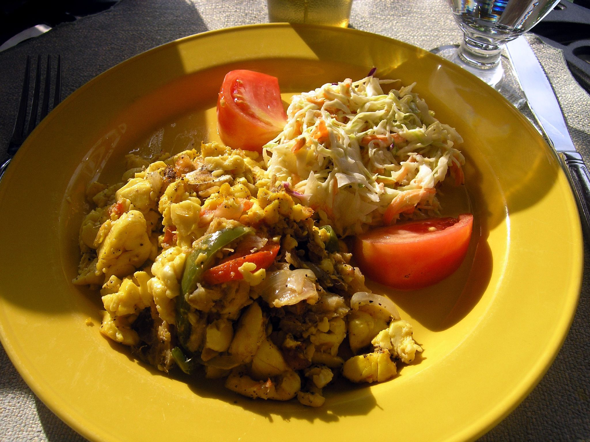

Ackee & Saltfish

Description
Ingredients
- 8 ounces (225g) salt cod
- 2 tablespoons (30ml) neutral oil, such as canola or vegetable
- 2 tablespoons (1 ounce; 30g) diced yellow onion, from 1/4 onion
- 2 heaping tablespoons (1 ounce; 30g) diced bell pepper, from 1/2 bell pepper
- 1/2 Scotch bonnet chile, stemmed, seeded, and minced
- 2 garlic cloves, minced
- 1 small tomato (about 2 ounces; 55g), cored and diced
- 1 scallion (10g), thinly sliced
- 2 tablespoons (3g) fresh thyme leaves and tender stems, chopped
- One 18-20 ounce can ackee
- Kosher salt and freshly ground black pepper
- Sliced avocado, for serving
Steps
- Rinse salt cod under cold running water until any salt on its surface is washed away. Transfer to a medium bowl and cover with fresh water. Soak at room temperature for 1 hour, or cover and refrigerate overnight. Drain salt cod, discard soaking water, transfer fish to a small saucepan, and cover with fresh water. Bring to a boil over medium-high heat, and cook until fish flakes easily when prodded with a fork, about 40 minutes. Taste, and if the cod is still too salty—it should have a similar salinity to bacon—drain and discard cooking water, return fish to saucepan, cover with a fresh change of water, and boil for an additional 20 minutes. Once the salt cod is cooked and seasoned to your liking, drain, and flake fish into 1/2- to 1-inch pieces, discarding any bones and silvery membranes. Set aside.
- In a 12-inch skillet, heat oil over medium heat until shimmering. Add onion, bell pepper, Scotch bonnet, and garlic and cook, stirring occasionally, until softened, about 5 minutes.
- Add the flaked salt cod and cook, stirring occasionally, until fish is heated through, about 5 minutes.
- Add tomato, scallion, and thyme, stir to combine, and cook until vegetables are tender and mixture is aromatic, about 5 minutes.
- Add ackee, stir gently to incorporate, taking care not to over-mix which can cause the ackee to become mushy, and cook until ackee is heated through, about 3 minutes. Season with salt and pepper to taste, and serve immediately with sliced avocado alongside.
Enjoy!